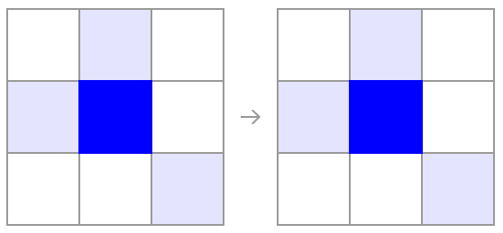
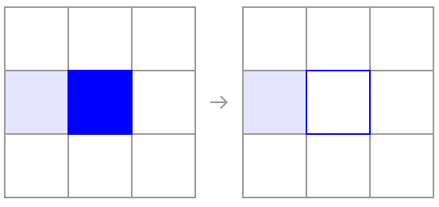
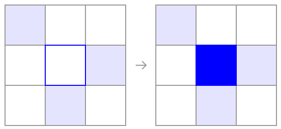
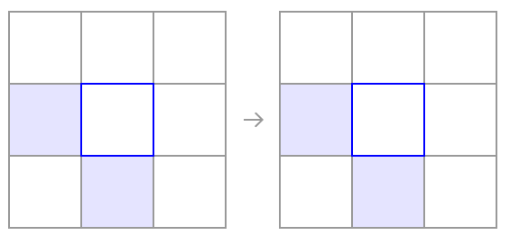

Die ursprüngliche erste Regeln von Conway hat folgende Eigenschaften:

Eine lebende Zelle mit genau 2 oder 3 lebenden Nachbarn überlebt in er nächsten Generation.

Eine lebende Zelle mit vier oder mehr Nachbarn stirbt an Überbevölkerung. Hat eine lebende Zelle nur einen oder keinen Nachbarn so stirbt sie an Isolation

Hat eine tote Zelle (leeres Quadrat) genau drei lebende Nachbarn, findet auf diesem Quadrat die Geburt einer neuen Zelle statt.

Ale restlichen Zellen sind in der Folgegeneration tot.